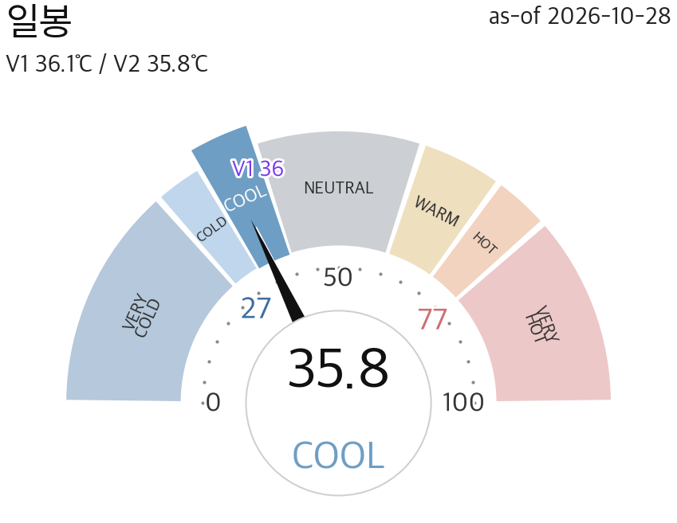
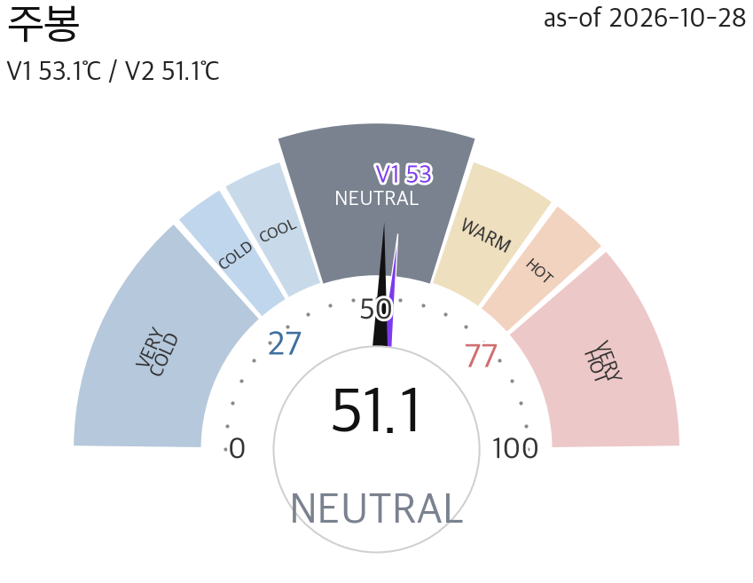
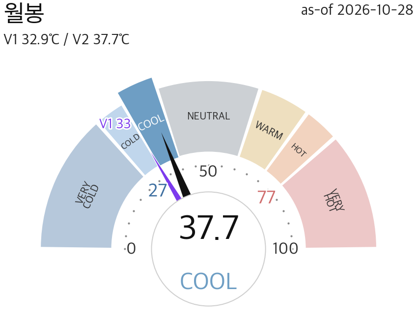
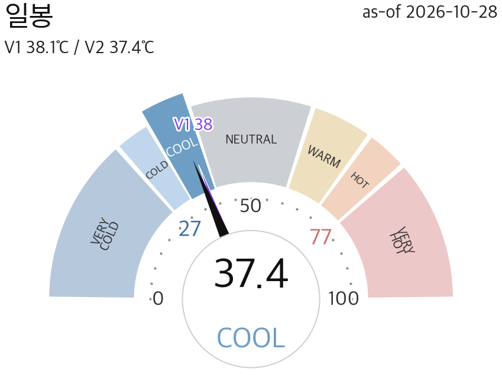
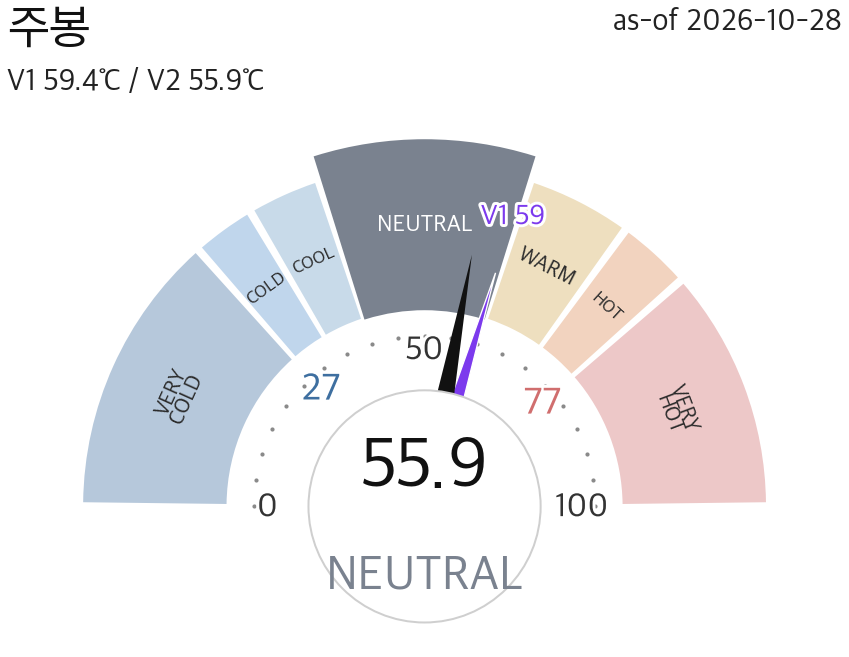
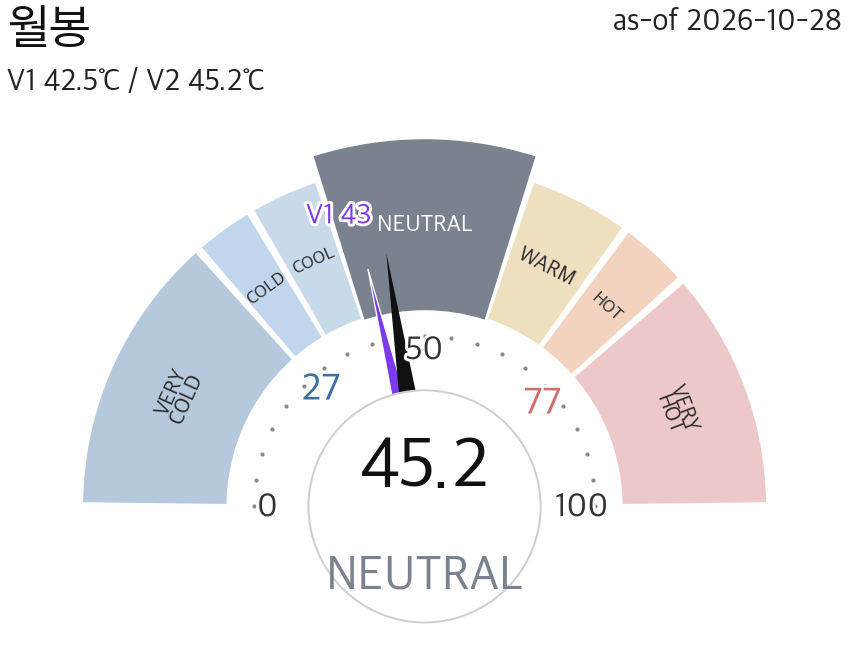
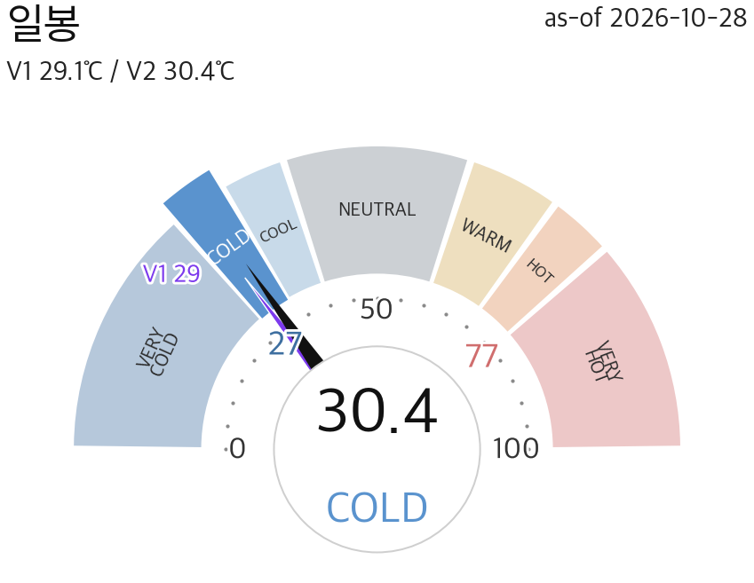
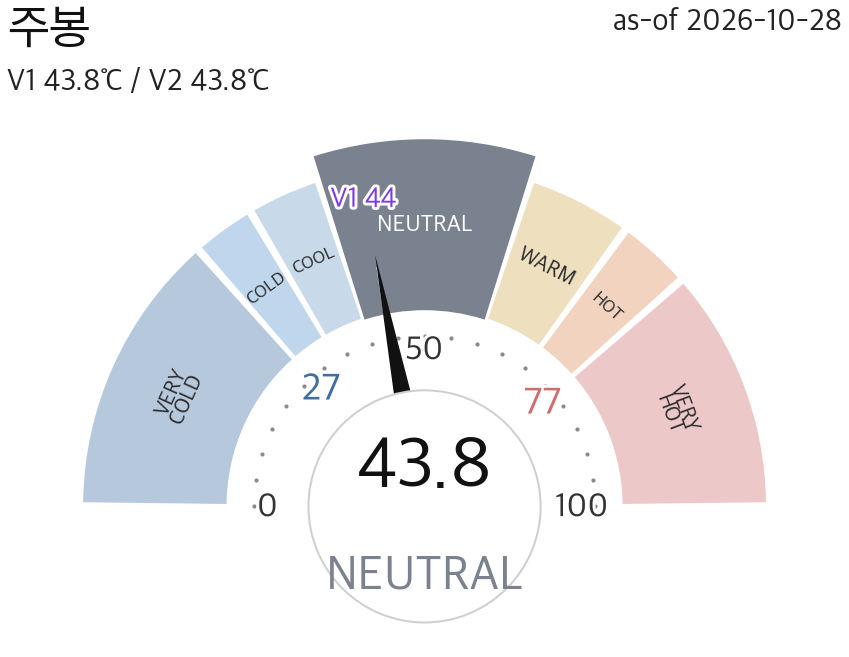
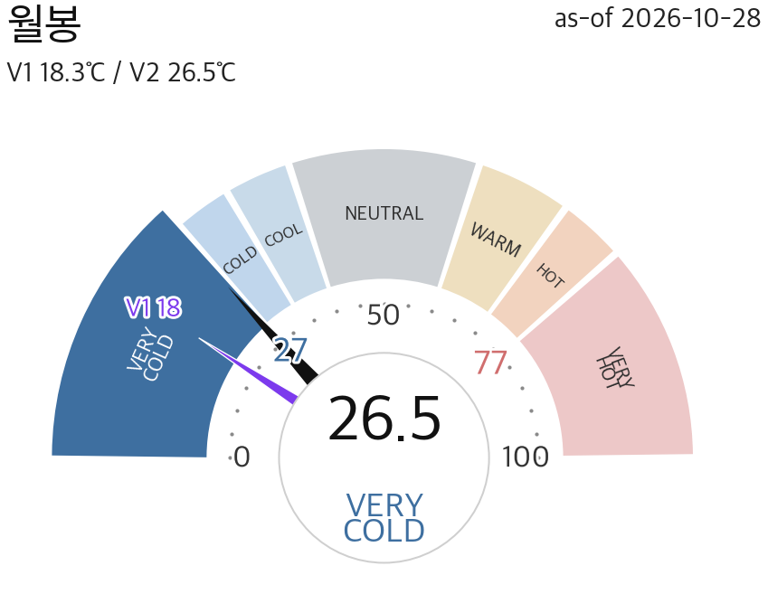

🇰🇷 KRMARKET TEMP3지수 · 온도·반전 15섹션2026-10-28 · 정규장 마감 🇰🇷 16:27 KST · 🇺🇸 03:27 ET · By Opus 5.5
통합 COOL 35.84℃ · 코스피200 COOL 37.42℃ · 코스닥150 COLD 30.44℃
코스닥150 한랭(COLD) 진입 · 코스피200 COOL · 통합 COOL · 반전 미armed · 1/4 온도 개요
종합 판정 · 지수 고점/저점 (최우선)
냉각·저점 근접
🔥
3분할 온도 카드
통합·코스피200·코스닥150 — V1/V2·존·Δ·게이지·폭·팬·armed
통합 (KS200+KQ150)COOLV2 35.84 · V1 36.11 · Δ+11.4📐 팬 = 개별 지수 세트🎯 미armed(대기)

전일대비 V1 ▲+12.6 / V2 ▲+11.4

전주대비 V1 ▲+26.9 / V2 ▲+26.2

전월대비 V1 ▼-21.5 / V2 ▼-20.1
코스피200COOLV2 37.42 · V1 38.15 · Δ+12.2📐 고점 +14.1%저점 −10.1%🎯 미armed(대기)

전일대비 V1 ▲+13.63 / V2 ▲+12.25

전주대비 V1 ▲+29.29 / V2 ▲+28.03

전월대비 V1 ▼-19.64 / V2 ▼-18.59
코스닥150COLDV2 30.44 · V1 29.13 · Δ+9.3📐 고점 +12.4%저점 −11.3%🎯 미armed(대기)

전일대비 V1 ▲+9.88 / V2 ▲+9.35

전주대비 V1 ▲+23.37 / V2 ▲+23.44

전월대비 V1 ▼-24.36 / V2 ▼-22.25
📈
지수별 대시보드
종가·등락·존·시장폭·수급 3주체 (3줄)
지수타입
마켓온도
지수(종가·상승률)
B&B(시장폭)
외국인
기관
개인
통합 (KS200+KQ150)
COOL
–
폭 80%BULLISH ☀️
+5,849
+11,442
-17,331
코스피200
COOL
95,650▲+7.59%
폭 79%BULLISH ☀️
+7,781
+9,146
-17,051
코스닥150
COLD
12,795▲+4.36%
폭 82%BULLISH ☀️
-1,932
+2,296
-280
※ 수급 = 시장 전체(코스피·코스닥) 3주체 순매수 · 확정 · 통합 = 코스피+코스닥 합 · 지수(KS200/KQ150)와 별개
🟰 지수 양극화as-of 2026-10-28
온도차 대형(코스피200) +7.0동조
대형(코스피200) COOL 37
성장(코스닥150) COLD 30
폭차 -3pp
※ 대형 ↔ 소형(성장) 온도 격차 = 스타일 쏠림 계량 (SSOT divergence_bands) / 밴드 = 동조 <8, 경미 8~16, 부분 양극화 16~26, 심한 양극화 ≥26
▶ 1/4 판정·온도카드·대시보드 · 2/4 온도 그래프 · 3/4 팬·반전 · 4/4 촉매·시나리오·매크로 · By Opus 5.5 · ⓒ NixStock